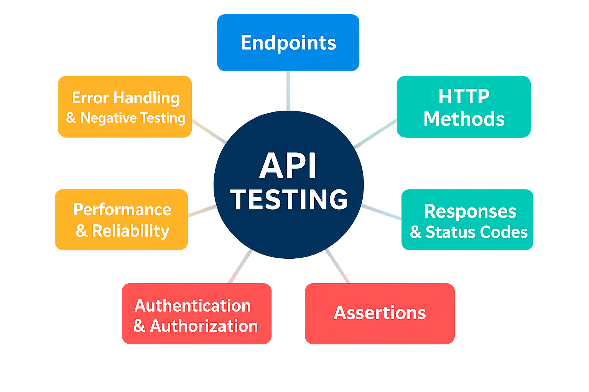

Introduction
API testing focuses on verifying that application programming interfaces (APIs) behave as expected. It ensures system reliability, detects issues early in the cycle, and improves test coverage beyond UI.
Fundamentals
Key Concepts

The URL paths where APIs are accessed.
Example:
GET https://api.example.com/users/123Tip: Always document endpoints with required parameters and expected responses.
Define the type of operation the API performs:
- GET: Retrieve data
- POST: Create new data
- PUT: Update existing data
- DELETE: Remove data
Tip: Ensure the API adheres to RESTful conventions.
- Query Parameters: Appended to the URL
?userId=123 - Body Parameters: Sent in the request body (e.g., JSON for POST)
Tip: Validate edge cases like missing, null, or invalid values.
APIs return structured data and HTTP status codes like:
-
: Success200 OK -
: Resource created201 Created -
: Client error400 Bad Request -
: Auth failure401 Unauthorized -
: Server crash500 Internal Server Error
Tip: Test all possible response scenarios, including error handling.
Carry metadata like content type and authentication tokens.
Example:
Authorization: Bearer <token>Tip: Validate headers for correctness and completeness.
Validate API behavior by checking:
- Status codes
- Response body content
- Response time
Tip: Use tools like Postman, REST Assured, or JSON Schema Validator for automated assertions.
APIs often require secure access:
- API Keys
- OAuth2 Tokens
- JWTs
Tip: Test role-based access and token expiry scenarios.
Measure response time, throughput, and stability under load.
Example:
GET /weatherEnsure response within 200ms under 100 concurrent users.
Tip: Use JMeter or Gatling for load and stress testing.
What to Test in API Testing
Tools for API Testing
Testing Artifacts
Advanced Topics
Capstone Project
Build a complete API test suite for a sample e-commerce API:
- User authentication
- Product listing and details
- Cart and checkout APIs
- Performance testing for critical endpoints
Automate with Postman or Cypress and integrate into CI/CD pipeline.
Documents
Let’s Connect
Reach out for collaborations, opportunities, or just to say hi!